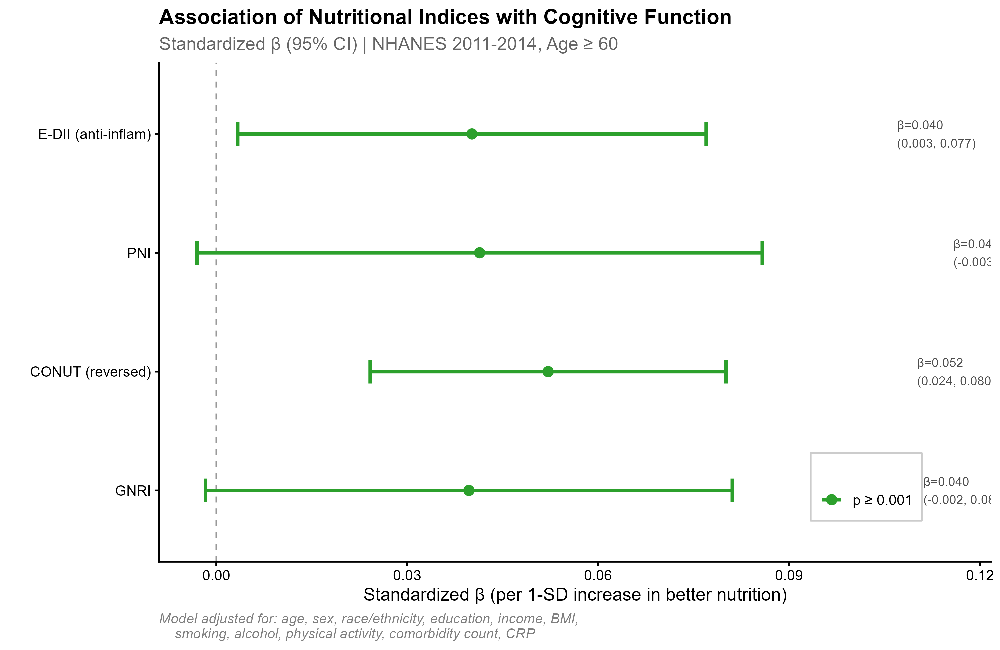
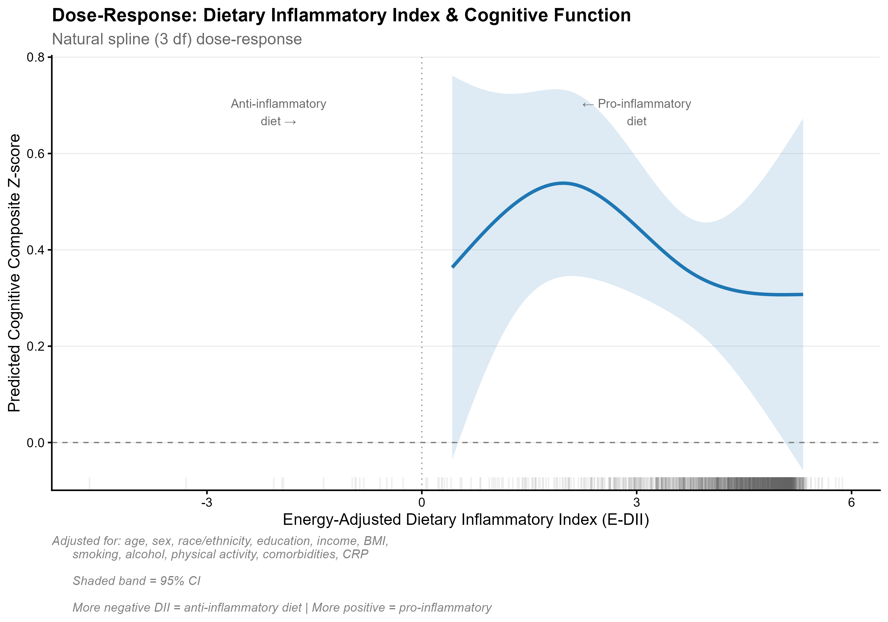
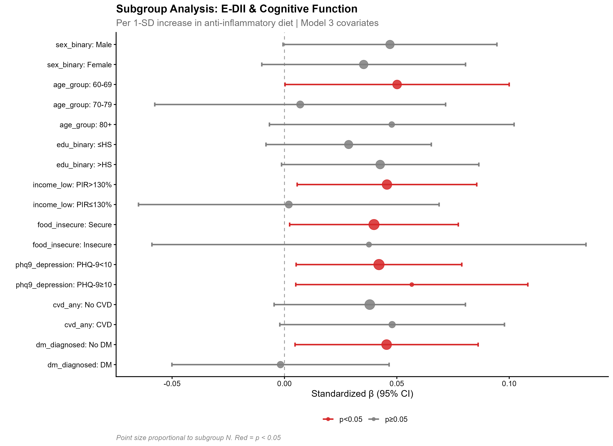
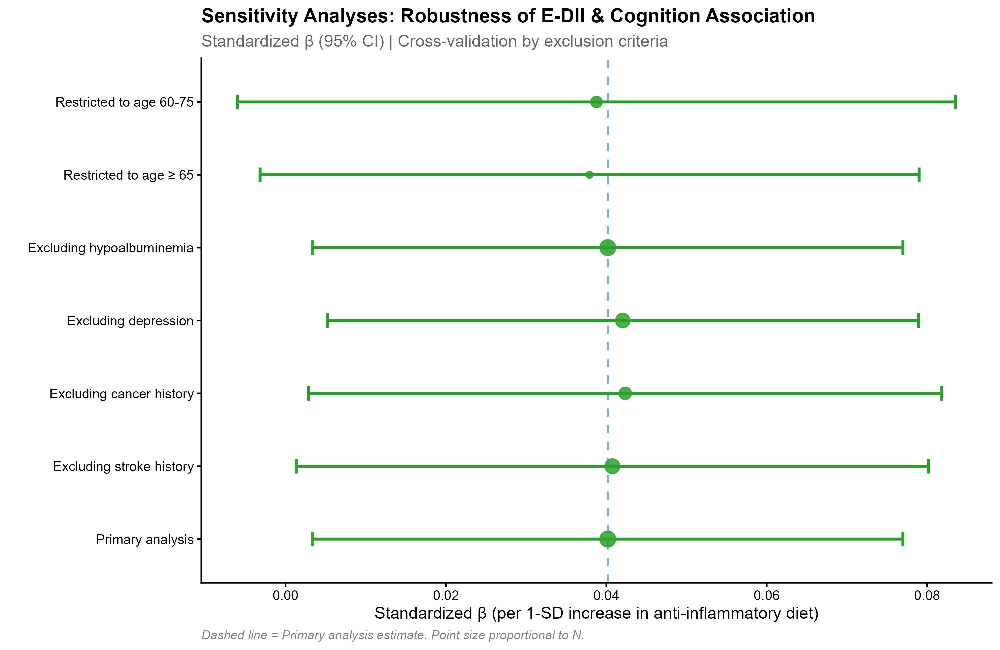
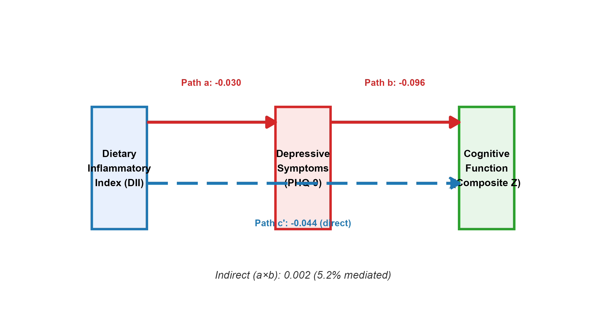
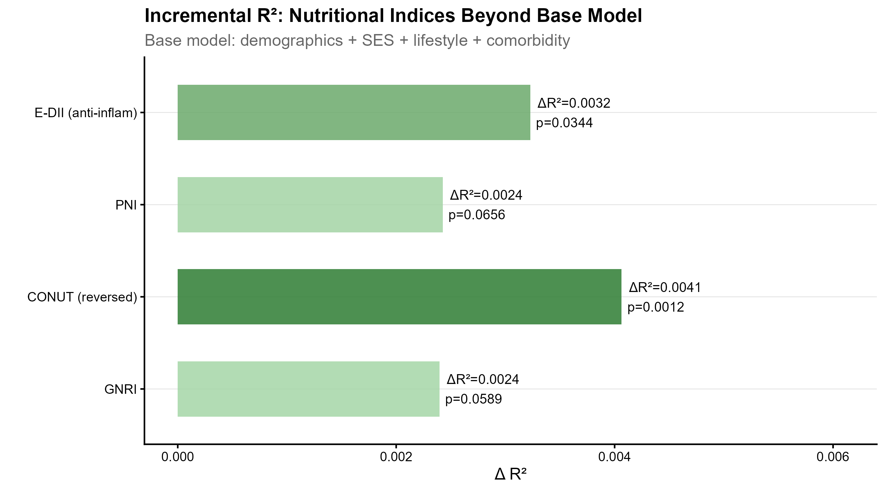

NHANES 2011-2014 | N = 2,313 (≥60 years, complete cases)
Date: 2026-07-24 | Status: Baseline analysis complete
| Index | Type | β (95% CI) | p | ΔR² | Status |
|---|---|---|---|---|---|
| CONUT | Blood-based | 0.052 (0.024, 0.080) | 0.001 | 0.0041 | SIGNIFICANT |
| E-DII (reversed) | Dietary recall | 0.040 (0.003, 0.077) | 0.034 | 0.0032 | SIGNIFICANT |
| PNI | Blood-based | 0.041 (-0.003, 0.086) | 0.066 | 0.0024 | Trend |
| GNRI | Blood-based | 0.040 (-0.002, 0.081) | 0.059 | 0.0024 | Trend |
Verdict: CONUT (albumin + cholesterol + lymphocyte) is the strongest predictor. E-DII also significant. PNI/GNRI show trends only.
Contrasts with published AHEI (10-14%) and vitamin D (10-21%) mediation findings. The DII→depression link itself is NS in this sample.
| Subgroup | β | p | Interpretation |
|---|---|---|---|
| Age 60-69 | 0.050 | 0.049 | Effect concentrated in younger elderly |
| Income >130% PIR | 0.046 | 0.028 | Higher SES shows effect |
| Income ≤130% PIR | 0.002 | 0.952 | No effect in low SES |
| Non-diabetic | 0.045 | 0.031 | Effect in metabolically healthy |
| Diabetic | -0.002 | 0.939 | No effect in diabetes |
| PHQ-9 ≥10 (depressed) | 0.057 | 0.036 | Effect magnified in depressed |
| Scenario | β | p | Robust? |
|---|---|---|---|
| Primary | 0.040 | 0.034 | ✓ Reference |
| Excl. stroke | 0.041 | 0.044 | ✓ |
| Excl. cancer | 0.042 | 0.037 | ✓ |
| Excl. depression | 0.042 | 0.028 | ✓ |
| Age ≥65 | 0.038 | 0.068 | Borderline |

Fig 2: Head-to-head forest

Fig 3: RCS dose-response

Fig 4: Subgroup forest

Fig 5: Sensitivity tornado

Fig 6: Mediation path

S4: R² increment
All data cached locally. Pipeline runs in ~3 minutes from XPT files: